100% real fruit, no artificial colors
Snow-like texture that melts instantly
Voted #1 Dessert Shop 3 years running
Every dessert crafted by hand fresh
Our master artisans combine exotic flavors and premium ingredients to create these one-of-a-kind frozen dessert experiences.
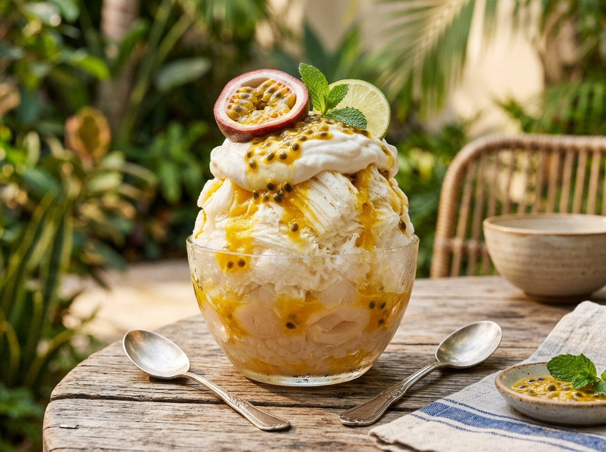
Passion fruit puree, lychee jelly, coconut cream, and edible gold flakes on ultra-fine shaved ice.
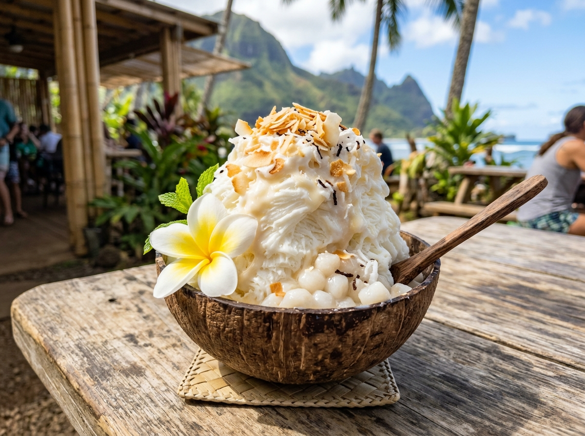
Toasted coconut cream base with pandan syrup, mochi pearls, and fresh coconut shavings.
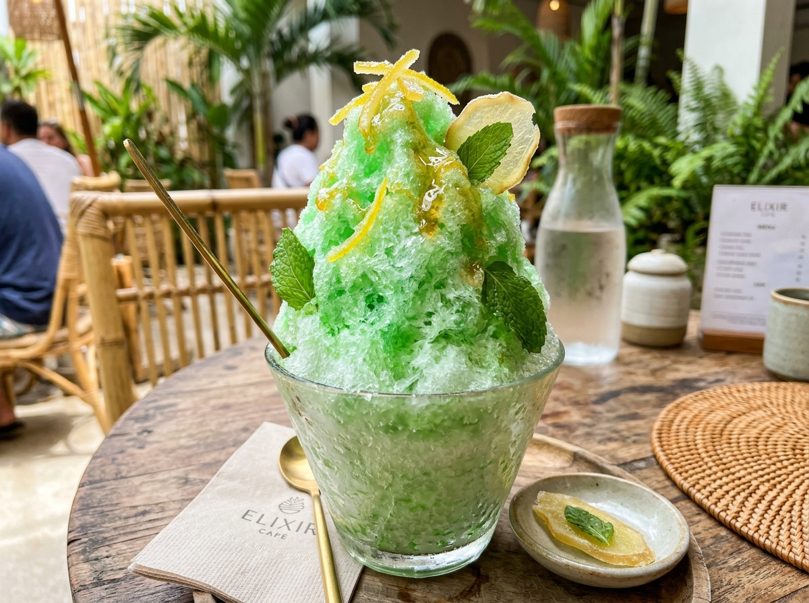
Lime-mint syrup, yuzu zest, jalapeño honey drizzle, and candied ginger on snow cream base.
Every creation is a work of art. Browse through some of our most photogenic masterpieces and get inspired for your next visit.
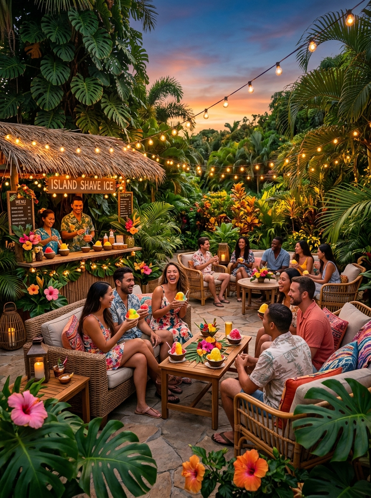
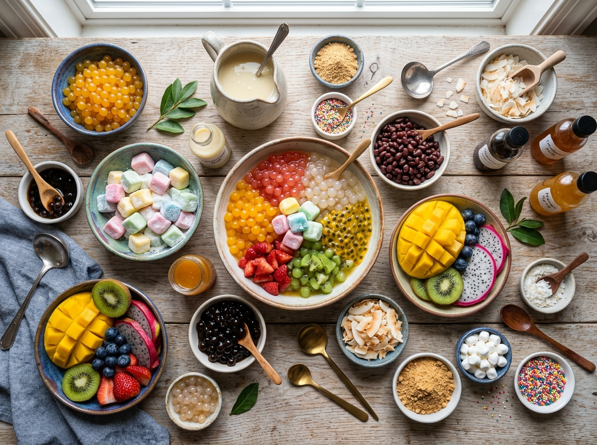
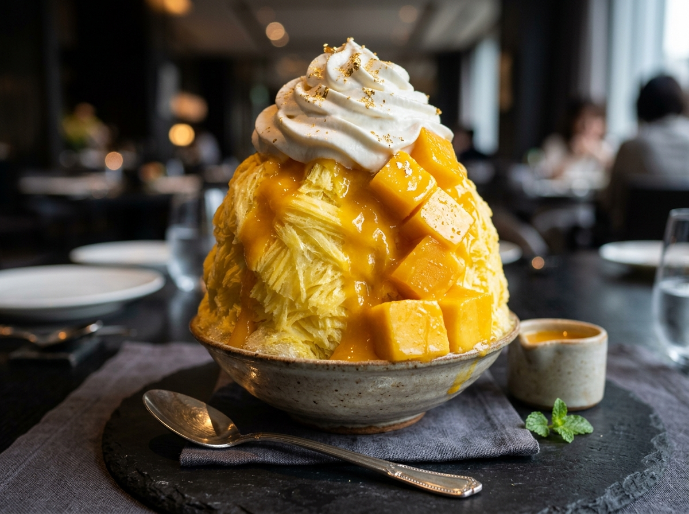
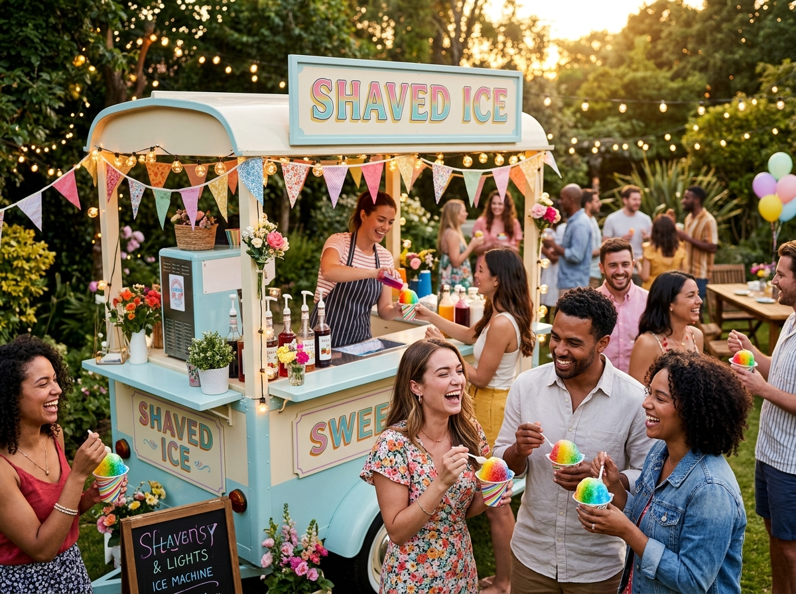
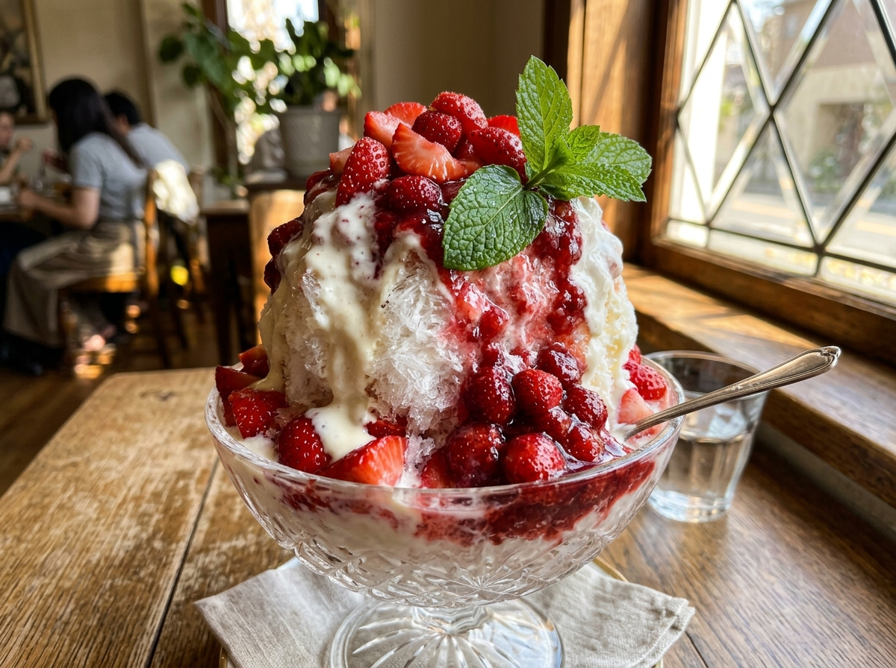
Every serving starts with a solid block of purified ice, crafted through a meticulous three-step process to ensure perfection.
We use triple-filtered purified water, frozen slowly over 24 hours to create crystal-clear, flavor-absorbing ice blocks.
Our Japanese-style block shavers create ultra-fine, snow-like ribbons — softer and lighter than traditional crushed ice.
Each order is layered with syrups between ice ribbons, then artfully topped with fresh fruits, creams, and garnishes.
Tag us in your photos for a chance to be featured! Share your Frost & Flurry moments with the community.
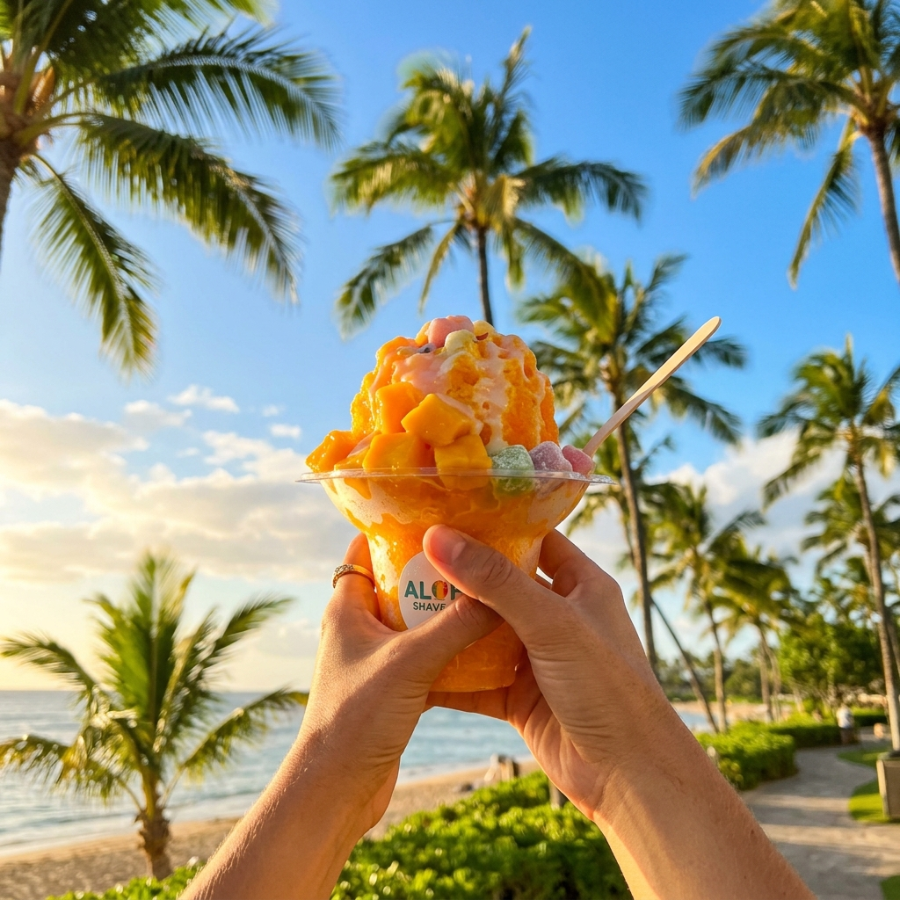
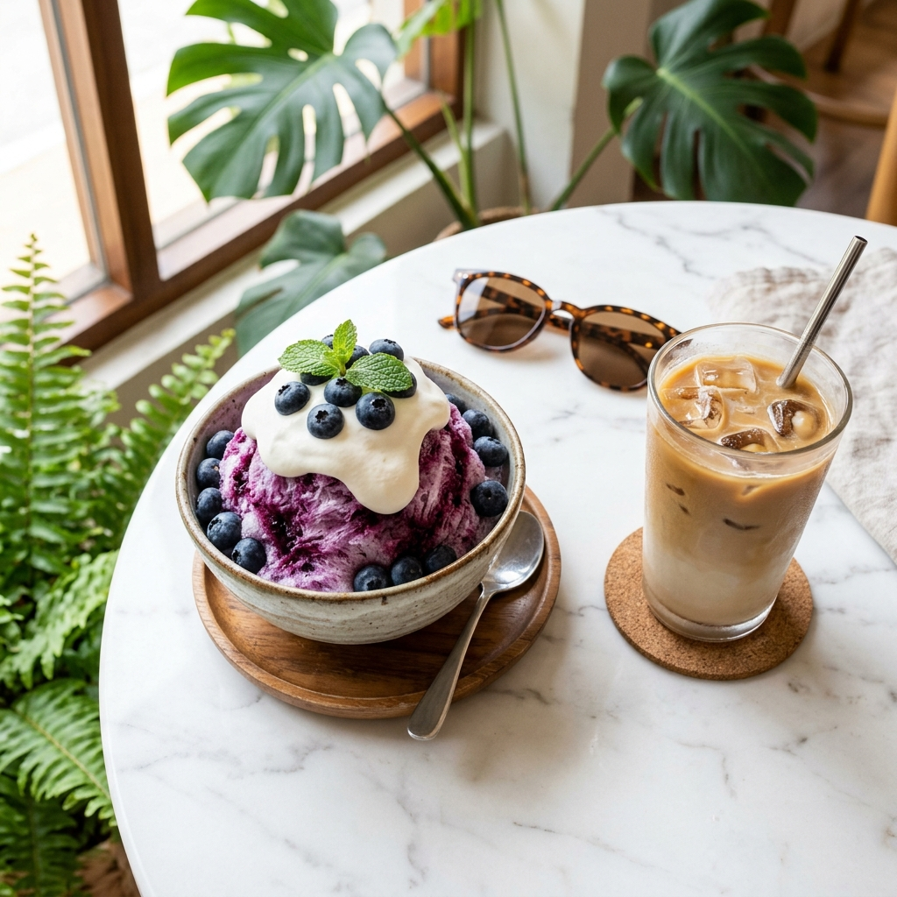
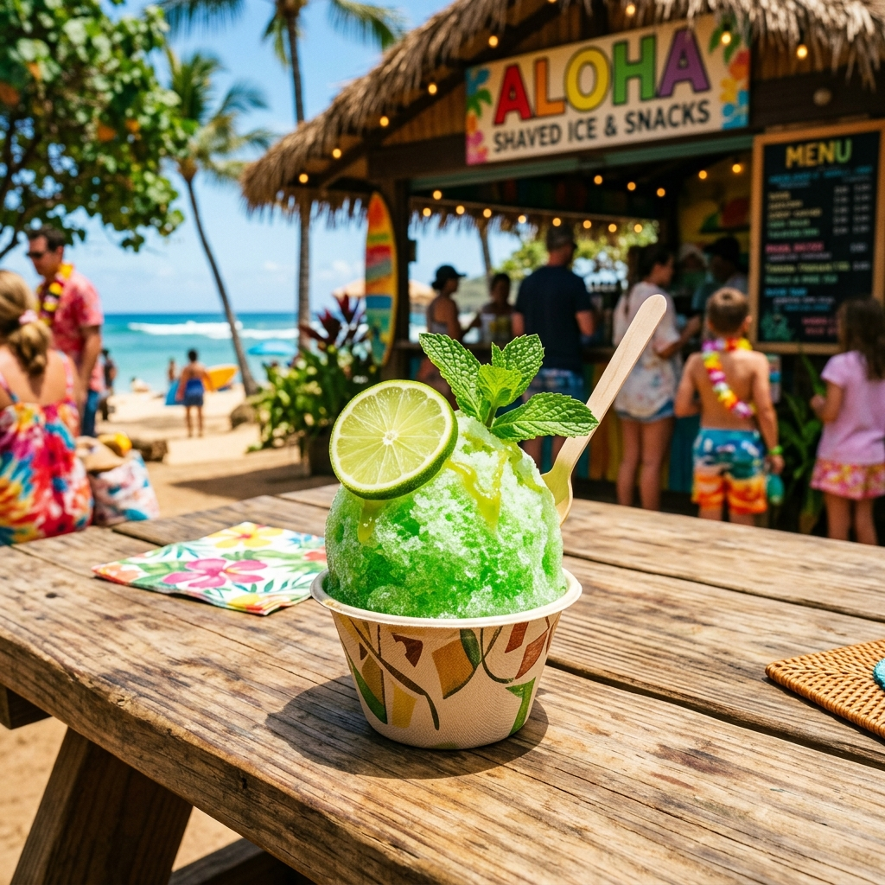
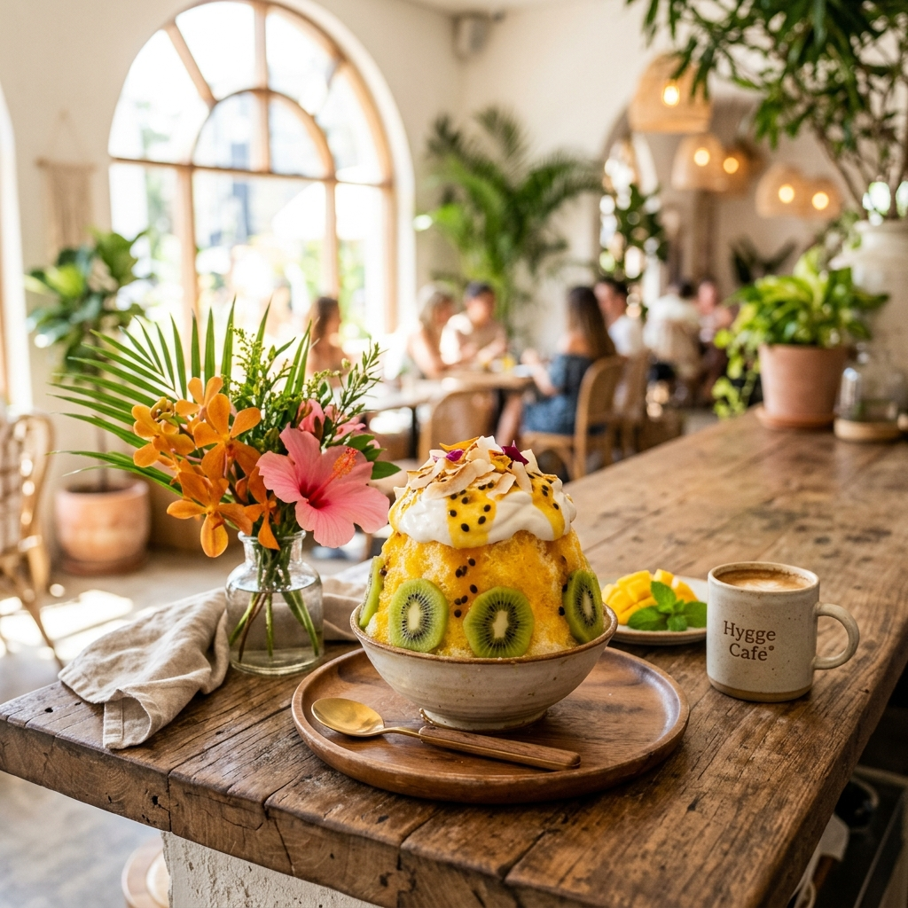
Got questions about our artisanal shaved ice, pure ingredients, online orders, or catering? We've got you covered.
Unlike hard, crunchy carnival snow cones made from crushed ice, our Japanese Kakigori precision machines shave sub-zero purified ice blocks into ultra-fine, ribbon-like flakes that melt like freshly fallen snow. We drench them with 100% natural, slow-simmered real fruit purees and house-made snow caps rather than artificial dyes or high-fructose corn syrups.
Yes! Nearly 100% of our fruit syrups and ice bases are naturally vegan, gluten-free, and fat-free. For our signature creamy snow caps and drizzles, we offer organic coconut cream and oat milk caps so you can enjoy full velvety decadence completely dairy-free.
Absolutely. You can order from our Chef's Signature Creations or build your own bespoke bowl: select your ice texture (Micro-Ribbon, Kakigori, or Island Silk Cream), choose up to 3 fruit nectars, add a signature drizzle, and crown it with handmade mochi pearls, popping boba, or toasted coconut flakes.
Yes! Our vintage mobile shaved ice carts and certified shave artists bring the live tropical pour experience directly to your celebration. We offer complete turnkey packages including setup, unlimited flavors, attendants, and custom branding.
Whether planning a wedding celebration, an intimate VIP gathering, or a corporate summer gala, our artisan dessert stations and master shave artists craft memorable frozen experiences.